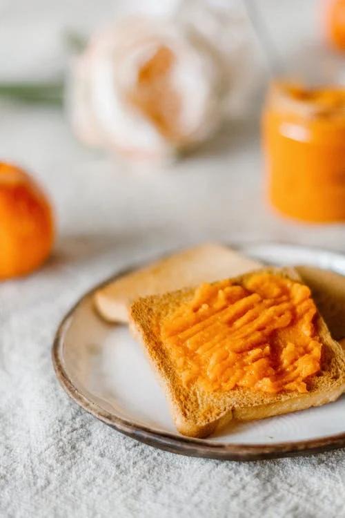

Home
Toasted Cheese Recipe

Description
Melted cheese between two slices of toasted bread
Ingredients
- Slice of Cheddar Cheese
- Two slices of bread
- Butter
Steps
- Butter both slices of bread
- In pan or sandwich toasting machine lay bread butter side down
- Put cheese on bread
- Close sandwich with other slice of bread
- Close toasting machine or out lid on pan
- If pan frying, flip after two minutes
- Remove from heat after four minutes